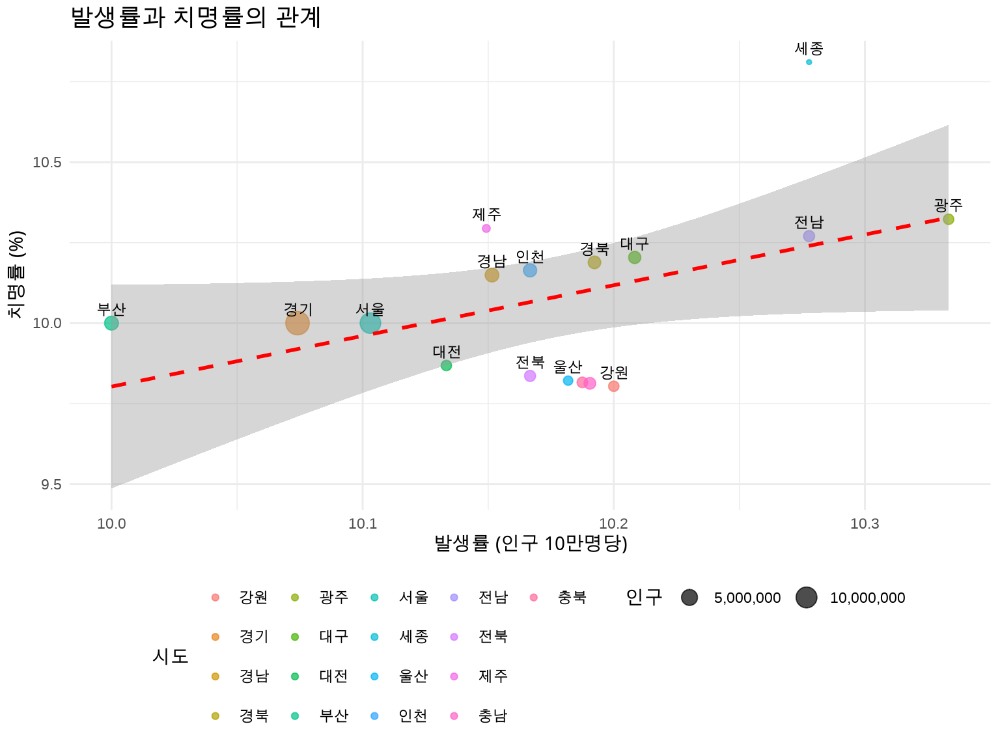
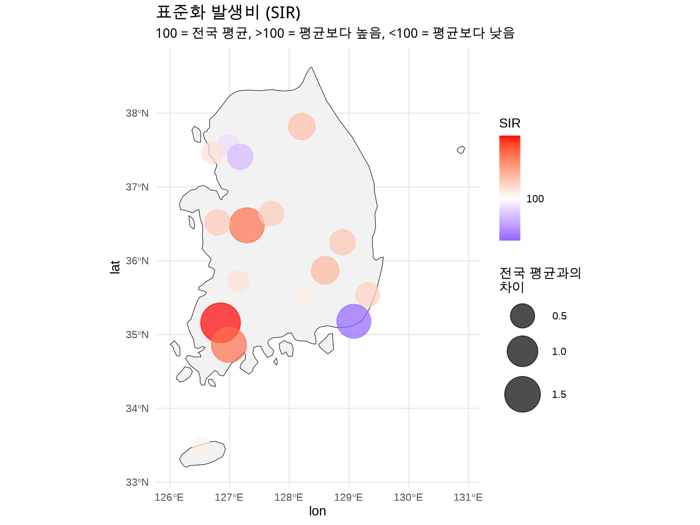

ggplot(regional_disease, aes(x =incidence_rate, y =case_fatality))+geom_point(aes(size =population, color =region), alpha =0.7)+geom_smooth(method ="lm", se =TRUE, color ="red", linetype ="dashed")+geom_text(aes(label =region), vjust =-0.8, size =3, check_overlap =TRUE)+scale_size_continuous(name ="인구", labels =scales::comma)+labs( title ="발생률과 치명률의 관계", x ="발생률 (인구 10만명당)", y ="치명률 (%)", color ="시도")+theme_minimal()+theme( plot.title =element_text(face ="bold", size =14), legend.position ="bottom")

Figure 6.4: 발생률 vs 치명률 산점도
6.4 4.4 인구 표준화: 공정한 비교를 위해
문제: 인구가 많은 지역이 발생 건수가 많을 수 있음
해결: 표준화 발생비 (SIR, Standardized Incidence Ratio) 사용
# 전국 평균 발생률national_rate<-sum(regional_disease$cases)/sum(regional_disease$population)*100000# SIR 계산regional_disease_sir<-regional_disease%>%mutate( expected_cases =(population/100000)*national_rate, SIR =(cases/expected_cases)*100, SIR_category =case_when(SIR<80~"매우 낮음",SIR<95~"낮음",SIR<105~"평균",SIR<120~"높음",TRUE~"매우 높음"))# SIR 결과regional_disease_sir%>%select(region, cases, expected_cases, SIR, SIR_category)%>%arrange(desc(SIR))
#> # A tibble: 17 × 5
#> region cases expected_cases SIR SIR_category
#> <chr> <dbl> <dbl> <dbl> <chr>
#> 1 광주 155 152. 102. 평균
#> 2 세종 37 36.5 101. 평균
#> 3 전남 185 182. 101. 평균
#> 4 대구 245 243. 101. 평균
#> 5 강원 153 152. 101. 평균
#> 6 경북 265 263. 101. 평균
#> 7 충남 214 213. 101. 평균
#> 8 충북 163 162. 101. 평균
#> 9 울산 112 111. 100. 평균
#> 10 전북 183 182. 100. 평균
#> 11 인천 305 304. 100. 평균
#> 12 경남 335 334. 100. 평균
#> 13 제주 68 67.9 100. 평균
#> 14 대전 152 152. 100. 평균
#> 15 서울 980 983. 99.7 평균
#> 16 경기 1360 1368. 99.4 평균
#> 17 부산 340 345. 98.7 평균
# SIR 점 지도map_data_sir<-regional_disease_sir%>%left_join(region_coords, by ="region")ggplot()+geom_sf(data =korea, fill ="grey95", color ="black")+geom_point(data =map_data_sir,aes(x =lon, y =lat, size =abs(SIR-100), color =SIR), alpha =0.7)+scale_size_continuous(name ="전국 평균과의\n차이", range =c(3, 15))+scale_color_gradient2( name ="SIR", low ="blue", mid ="white", high ="red", midpoint =100, breaks =c(80, 90, 100, 110, 120))+theme_minimal()+labs( title ="표준화 발생비 (SIR)", subtitle ="100 = 전국 평균, >100 = 평균보다 높음, <100 = 평균보다 낮음")+theme( legend.position ="right", plot.title =element_text(face ="bold", size =14))

Figure 6.5: 표준화 발생비 (SIR) - 전국 평균 대비
6.5 4.5 공간 데이터 분석 워크플로우
6.5.1 4.5.1 실전 분석 단계
1단계: 데이터 수집 - 질병 발생 데이터 (보건소, 질병관리청) - 인구 데이터 (통계청) - 공간 경계 파일 (Shapefile, GeoJSON)
2단계: 데이터 전처리
# 표준화- 인구 10만명당 발생률- 연령 표준화 (직접/간접 표준화)- SIR 계산
3단계: 공간 결합
# sf 객체와 데이터 결합combined_data<-left_join(spatial_data, disease_data, by ="region_id")
4단계: 시각화 - 코로플레스 맵: geom_sf() + scale_fill_* - 점 지도: geom_point() with coordinates - 복합 레이어: 지도 + 점 + 라벨